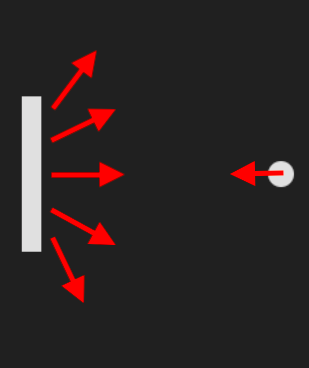
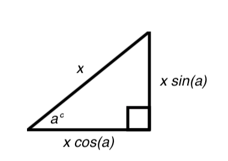

In this lesson we will add collision between the ball and the paddles.
Now all we have to do to start playing the game is add collision between the ball and the paddles. Before
we do that, let's make the ball reposition itself to the center of the screen every time it touches the left
or right edge. First let's make a simple reposition() function and start the ball going toward
the player paddle.
let ballDX = -4;
let ballDY = 0;
...
function reposition() {
ballX = canvas.width / 2;
ballY = canvas.height / 2;
ballDX = -4;
ballDY = 0;
}
Now let's use this new function in the collision function. It will run when the ball touches the left or
right walls. See if you can do it yourself before looking at our code.
Updated function:
function handleCollision() {
ballTop = ballY - BALL_SIZE;
ballBottom = ballY + BALL_SIZE;
if (ballX < 0) {
reposition();
}
else if (ballX > canvas.width) {
reposition();
}
// Handle collision with the walls
else if (ballTop + ballDY < 0 || ballBottom > canvas.height) {
ballDY = -ballDY;
}
}
Now the left side of your screen should look like this:
Now we need to add some collision between the paddle and the ball. The collision math for this step may be a little bit confusing, but try your best to understand the general concept. You can skip the explanation and come back later if you want.
Basically, we want the ball to go off at a wider angle if it is closer to the edge of the paddle compared to the middle.
We also want to make the ball go at a constant speed. To do so we can use simple trigonometry.
I'll explain the math while we code. First, let's add some new variables and a new bounceBall()
function that will change the ball's motion depending on which paddle is hit. We can later use this function
in the collision function.
const PLAYER_PADDLE_DY = 6;
const MAX_ANGLE = Math.PI / 3; // 60 degrees
...
let downIsPressed = false;
let ballYTop; // stores the ball y position relative to the top of the paddle
let ballYCenter; // stores the ball y position relative to the center of the paddle
let relativeBallYCenter; // stores the ball y position relative to the center of the paddle between -1 and 1
let angle; // stores angle that the ball will bounce off of a paddle with
let maxBallSpeed = 6;
let mouseY;
...
function bounceBall(paddle) {
}
All these variables will only be calculated when the ball is hitting a paddle.
The ballYTop variable stores the number of pixels below the top of the paddle that the center of
the ball is. So, the calculation for this variable would be:
ballYTop = ballY - paddle.y;
The ballYCenter variable stores the distance between the ball and the center of the paddle.
Since a paddle is 120 pixels high, this variable should range from -60 to +60 pixels. We can calculate this
variable like this:
ballYCenter = ballYTop - PADDLE_HEIGHT / 2;
Now we can calculate the relativeBallYCenter variable, which stores the relative distance from
the center of the paddle to the ball. Its value should only range from -1 to +1. Since the
ballYCenter variable ranges from -60 to +60, we can just divide that variable by 60, or half
the length of the paddle, to calculate relativeBallYCenter:
relativeBallYCenter = ballYCenter / (PADDLE_HEIGHT / 2);
We could have done this calculation with fewer variables, but we did it this way to make the math easier to understand.
Now we need to calculate the angle at which the ball will travel after it hits the paddle. This can be
calculated by multiplying the maximum angle that we want the ball to have, in our case 60 degrees, by the
relativeBallYCenter variable value. This determines an angle between +60 and -60 degrees at
which
the ball will travel depending on where it hits the paddle. You can also change the
MAX_ANGLE variable to change the maximum angle that the ball will be able to travel at.
angle = MAX_ANGLE * relativeBallYCenter;
Now we will use some simple trigonometry to set the ball's x and y speeds:
ballDY = maxBallSpeed * Math.sin(angle);
ballDX = maxBallSpeed * Math.cos(angle);
To understand this look at this diagram:
This describes the relationship between the hypotenuse (longest side opposite the right angle) of a right triangle and the two "leg" sides. If the longest side is represented with x, then the leg opposite angle a is equal to the length of x multiplied by the sine of angle a. It is the same but with cosine with the leg perpendicular to angle a.
If we consider x to be equal to maxBallSpeed and a to be angle,
then we are setting the speeds ballDY and ballDX in such a way to keep
maxBallSpeed constant. We are setting ballDY and ballDX as the legs
of a right triangle which have the same hypotenuse (maxBallSpeed) but variable values of
angle.
Putting it all together, this is what the function should look like:
function bounceBall(paddle) {
// changes the angle of the ball depending on where it hits
ballYTop = ballY - paddle.y;
ballYCenter = ballYTop - PADDLE_HEIGHT / 2;
relativeBallYCenter = ballYCenter / (PADDLE_HEIGHT / 2);
angle = MAX_ANGLE * relativeBallYCenter;
// The trig keeps the speed of the ball constant
ballDY = maxBallSpeed * Math.sin(angle);
ballDX = maxBallSpeed * Math.cos(angle);
}
Now we can implement this in the collision function. You can fiddle with the collision conditions yourself, but this is what I will be using:
function handleCollision() {
ballTop = ballY - BALL_SIZE;
ballBottom = ballY + BALL_SIZE;
if (ballX < 0) {
reposition();
}
else if (ballX > canvas.width) {
reposition();
}
// Handle collision with the walls
else if (ballTop + ballDY < 0 || ballBottom > canvas.height) {
ballDY = -ballDY;
}
// Handle collision with the player paddle on the left
// true if left side of the ball is within the paddle
if ((ballX - BALL_SIZE + ballDX < playerPaddle.x + PADDLE_WIDTH) &&
(ballX - BALL_SIZE + ballDX > playerPaddle.x) &&
(ballY < playerPaddle.y + PADDLE_HEIGHT) &&
(ballY > playerPaddle.y)) {
bounceBall(playerPaddle);
}
}
This new if statement activates if the ball hits the player paddle. Now the player paddle should work as
expected. However, we still need to edit this function for the opponent paddle. We need to edit the
collision function to activate the bounceBall() function when the ball hits the opponent
paddle:
function handleCollision() {
ballTop = ballY - BALL_SIZE;
ballBottom = ballY + BALL_SIZE;
if (ballX < 0) {
reposition();
}
else if (ballX > canvas.width) {
reposition();
}
// Handle collision with the walls
else if (ballTop + ballDY < 0 || ballBottom > canvas.height) {
ballDY = -ballDY;
}
// Handle collision with the player paddle on the left
// true if left side of the ball is within the paddle
if ((ballX - BALL_SIZE + ballDX < playerPaddle.x + PADDLE_WIDTH) &&
(ballX - BALL_SIZE + ballDX > playerPaddle.x) &&
(ballY < playerPaddle.y + PADDLE_HEIGHT) &&
(ballY > playerPaddle.y)) {
ballBounce(playerPaddle);
}
// Handle collision with the opponent paddle on the right
// true if right side of the ball is within the paddle
if ((ballX + BALL_SIZE + ballDX < opponentPaddle.x + PADDLE_WIDTH) &&
(ballX + BALL_SIZE + ballDX > opponentPaddle.x) &&
(ballY < opponentPaddle.y + PADDLE_HEIGHT) &&
(ballY > opponentPaddle.y)) {
ballBounce(opponentPaddle);
}
}
However, since we need to make the ball go in the opposite x direction when it hits the opponent paddle, we
need to edit the bounceBall() function to make ballDX negative when the ball hits
the opponent paddle. This is where the name property of
the paddles is useful.
function bounceBall(paddle) {
// changes the angle of the ball depending on where it hits
ballYTop = ballY - paddle.y;
ballYCenter = ballYTop - PADDLE_HEIGHT / 2;
relativeBallYCenter = ballYCenter / (PADDLE_HEIGHT / 2);
angle = MAX_ANGLE * relativeBallYCenter;
// The trig keeps the speed of the ball the constant
if (paddle.name === "player") {
ballDY = maxBallSpeed * Math.sin(angle);
ballDX = maxBallSpeed * Math.cos(angle);
}
else if (paddle.name === "opponent") {
ballDY = maxBallSpeed * Math.sin(angle);
ballDX = -maxBallSpeed * Math.cos(angle);
}
}
Now the paddles can pass the ball between each other.
Note: the paddle is chasing the ball because of the optional ball chasing code from part 4.
I am going to add one more line of code that speeds up the ball every time it hits a paddle:
function bounceBall(paddle) {
// Changes the angle of the ball depending on where it hits
ballYTop = ballY - paddle.y;
ballYCenter = ballYTop - PADDLE_HEIGHT / 2;
relativeBallYCenter = ballYCenter / (PADDLE_HEIGHT / 2);
angle = MAX_ANGLE * relativeBallYCenter;
// The trig keeps the speed of the ball the constant
if (paddle.name === "player") {
ballDY = maxBallSpeed * Math.sin(angle);
ballDX = maxBallSpeed * Math.cos(angle);
}
else if (paddle.name === "opponent") {
ballDY = maxBallSpeed * Math.sin(angle);
ballDX = -maxBallSpeed * Math.cos(angle);
}
maxBallSpeed += 1; // Speeds up the ball every hit
}
We should also update the reposition function to reset the max ball speed:
function reposition() {
ballX = canvas.width / 2;
ballY = canvas.height / 2;
ballDX = -4;
ballDY = 0;
maxBallSpeed = 6;
}
Now it's finally time to add the score and winning.